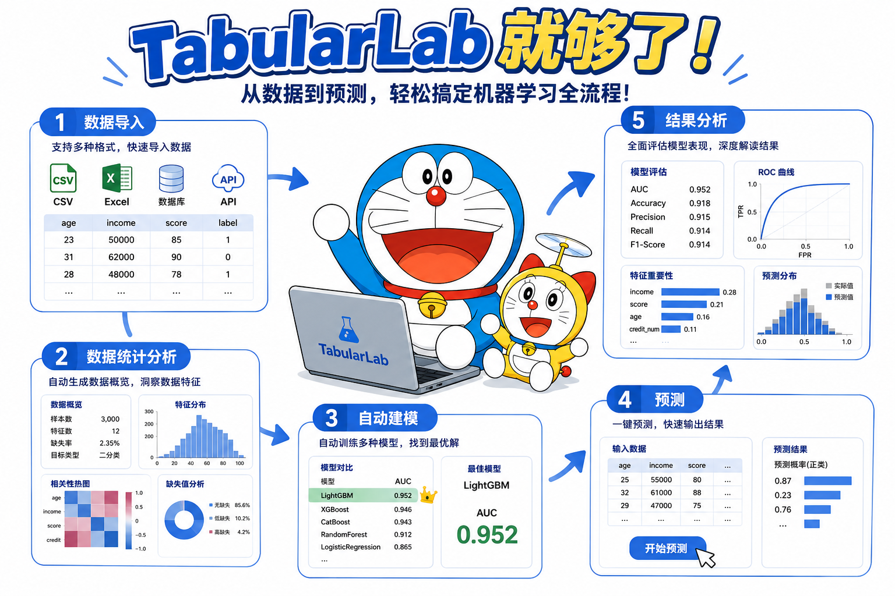
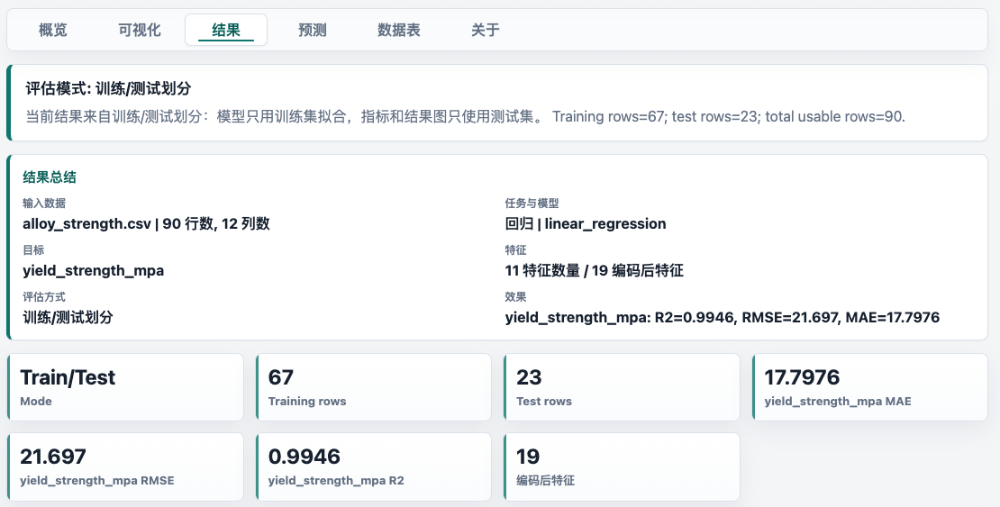
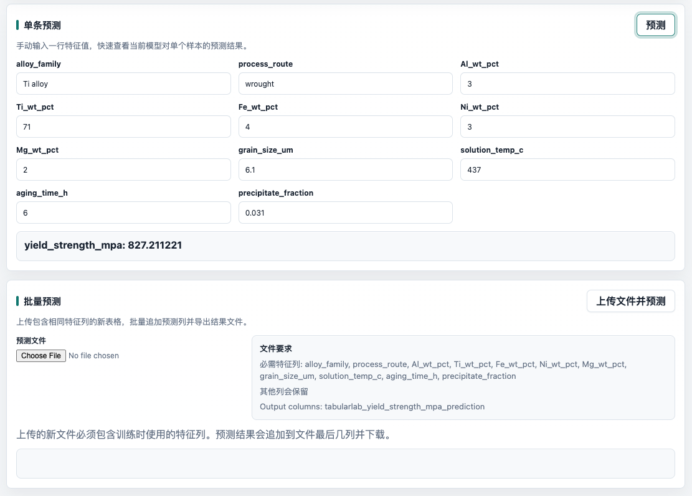
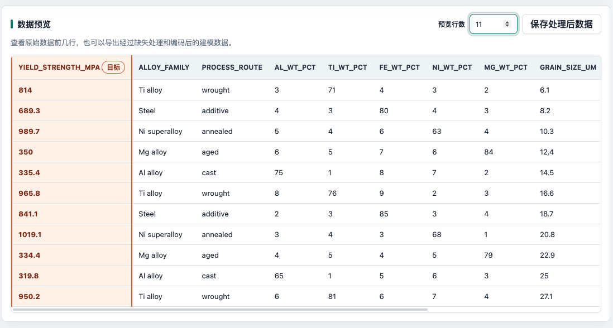

TabularLab V1.1.0 中文操作说明书
这份说明书面向第一次接触机器学习工具的用户。你不需要会写代码，只要准备一张表格，按照“导入数据、选择任务、设置字段、训练模型、查看结果、导出图表、进行预测”的顺序操作，就可以完成一次本地表格机器学习分析。

TabularLab 所有数据都在本机浏览器或桌面 App 内处理，不需要上传到服务器。它适合教学、论文初步分析、材料数据表格探索、小型项目建模和快速出图。
2. 快速开始：5 分钟跑通一次分析
如果你只是想先体验软件，可以不用准备数据，直接使用内置示例数据。
从发布页面下载桌面 App 后直接运行，或者在浏览器中打开项目根目录的 index.html。
在左侧“数据源”选择一个默认数据集，点击“加载示例数据”。
在“任务设置”检查任务类型、目标列和特征列。示例数据通常会自动推荐。
在“处理与训练”选择模型，点击“运行分析”。
进入“结果”标签页，查看指标、总结报告、结果分析图和可导出文件。
进入“预测”标签页，输入一条新样本，或上传一个新文件做批量预测。

附录：机器学习基础概念（初学者阅读）
机器学习可以理解为：让软件从已有表格中学习“输入”和“答案”之间的关系，然后把这个关系用于新样本。TabularLab 面向的是表格机器学习，也就是每一行是一条样本、每一列是一种信息。
一行是一条样本。例如一个材料、一条实验记录、一个学生、一件产品。模型会从很多行样本中学习规律。
一列是一种信息。例如密度、温度、工艺、类别、强度、是否合格。列名应该清楚、稳定，不要用合并单元格。
特征是模型的输入，也就是用来判断答案的信息。例如成分、处理温度、晶粒尺寸、材料族、工艺路线。
目标是你希望模型预测的答案。例如屈服强度、材料类别、是否在热处理窗口内。回归和分类需要目标列，聚类不需要。
训练就是让模型看已有数据，调整内部参数，让预测结果尽量接近真实答案。训练不是记住表格，而是学习可推广的规律。
预测是把新样本的特征输入训练好的模型，让模型输出目标值、类别或簇编号。新样本必须包含训练时使用的特征列。
训练集用于学习规律；测试集暂时不让模型看到，用来检查模型对新数据的表现。测试集指标比训练集指标更接近真实使用效果。
K 折交叉验证会轮流用一部分数据做验证，其余数据训练。TabularLab 的 OOF 评估会把每一折验证预测拼接起来，让每条样本都被验证一次。
回归预测连续数值。例：强度、容量、价格、温度。常看 R2、RMSE、MAE；R2 越高通常越好，RMSE/MAE 越低通常越好。
分类预测类别标签。例：材料类别、合格/不合格、低/中/高等级。常看 Accuracy、Precision、Recall、F1 和混淆矩阵。
聚类没有标准答案，模型会根据特征相似性自动把样本分组。它适合探索材料族、发现异常样本或观察数据结构。
过拟合是模型把训练数据细节甚至噪声学得太死，训练效果很好，但新数据效果差。降低模型复杂度、增加数据、交叉验证都能帮助发现过拟合。
TabularLab 中用到的主要算法
| 算法 | 适用任务 | 直观理解 | 什么时候适合 |
|---|---|---|---|
| Linear / Ridge / Lasso / ElasticNet | 回归 | 用一组加权公式把特征组合成数值预测。 | 想要速度快、可解释、作为基线模型时。 |
| Linear SVR / Linear SVM | 回归 / 分类 | 寻找能稳定分开样本或减少预测误差的线性边界。 | 特征较多、关系近似线性时。 |
| Decision Tree | 回归 / 分类 | 像流程图一样不断问“某列是否大于某个值”。 | 希望模型容易解释，但要注意过拟合。 |
| Random Forest | 回归 / 分类 | 训练很多棵树，再投票或平均。 | 通用、稳健，适合很多非线性表格问题。 |
| Gradient Boosting | 回归 | 一轮一轮修正前面模型的错误。 | 需要较强拟合能力，且愿意调参时。 |
| KNN | 回归 / 分类 | 找最相似的 K 个样本，用它们的答案做预测。 | 数据量不大、相似样本确实有相似结果时。 |
| Softmax Logistic | 分类 | 给每个类别计算概率，选择概率最高的类别。 | 多分类基线、需要快速稳定结果时。 |
| Gaussian Naive Bayes | 分类 | 估计各类别下特征分布，再判断新样本最像哪一类。 | 需要非常快的分类基线时。 |
| KMeans | 聚类 | 把样本分成 K 组，每组围绕一个中心。 | 你大致知道要分几类，且簇比较圆/集中时。 |
| DBSCAN | 聚类 | 按样本密度成团，孤立点会标为噪声。 | 想发现异常点，或簇形状不规则时。 |
| Agglomerative | 聚类 | 从每个样本单独成组开始，逐步合并相近组。 | 希望观察层次式分组关系时。 |
初学者推荐判断顺序
- 先问自己：我要预测数值、预测类别，还是只是自动分组？这决定回归、分类或聚类。
- 再确认目标列有没有被误选为特征。答案列不能作为输入，否则指标会虚高。
- 先用默认模型跑通流程，再比较 2-3 个模型，不要一开始就过度调参。
- 优先看测试集或交叉验证结果，不要只看训练过程或单个漂亮图。
- 如果指标很差，先检查数据质量、目标列、特征列和缺失值，而不是马上换复杂模型。
样本编号、实验编号、随机 ID 通常不代表真实规律。如果把它们作为特征，模型可能学到无意义的编号关系。
3. TabularLab 的完整工作流
- 准备表格：CSV、TSV、TXT、XLSX 或 XLS。
- 导入数据：上传文件或加载示例数据。
- 选择任务：回归、分类或聚类。
- 指定字段角色：哪些列是特征，哪些列是目标，哪些列忽略。
- 设置预处理：缺失值怎么填、类别文本怎么编码。
- 选择模型：不同任务会显示不同模型。
- 运行分析：训练模型并生成指标、图表和预测结果。
- 解释结果：看总结报告、指标、结果分析图。
- 导出文件：导出图表、结果 JSON、预测 CSV、处理后数据。
- 新数据预测：输入单条样本或上传批量预测文件。
4. 数据源：导入自己的表格或示例数据

支持的文件类型
.csv：最推荐，兼容性最好。.tsv/.txt：适合制表符或文本分隔的数据。.xlsx/.xls：Excel 文件，软件会读取第一个工作表。
导入自己的数据
- 点击虚线框，选择你的文件；也可以把文件拖到虚线框内。
- 导入后，左侧会显示当前数据集名称、行数和列数。
- 进入“概览”查看字段摘要，确认列名、缺失值和数据类型是否合理。
加载示例数据
- 在“默认数据”下拉框选择一个示例。
- 阅读默认数据说明，了解它适合做回归、分类还是聚类。
- 点击“加载示例数据”。
第一行应该是列名；不要合并单元格；每一列尽量只放一种含义；缺失值可以留空，后面由软件统一处理。
5. 任务设置：决定你要解决什么问题

| 任务类型 | 适合的问题 | 目标列要求 | 结果怎么看 |
|---|---|---|---|
| 回归 | 预测数值，例如强度、容量、价格 | 目标列必须是数值 | 看 R2、RMSE、MAE 和真实值-预测值图 |
| 分类 | 预测类别，例如材料类别、合格/不合格 | 目标列通常是文本或类别 | 看 Accuracy、分类报告和混淆矩阵 |
| 聚类 | 自动分组，没有标准答案 | 不需要目标列 | 看簇数量、簇大小、投影散点图 |
如何选择目标列
目标列就是你希望预测的答案。回归和分类可以选择一个或多个目标列；聚类任务没有目标列。
如何选择特征列
特征列就是模型用来判断答案的输入信息。建议选择与目标有物理、业务或实验关系的列，去掉纯编号、备注、无关文本。
6. 字段角色：逐列确认特征、目标、忽略

- 特征：模型输入。模型会根据这些列学习规律。
- 目标：模型要预测的答案。回归/分类需要，聚类不需要。
- 忽略：不用进入模型。例如编号、备注、数据来源、重复列。
如果把答案列误选为特征，模型会“偷看答案”，指标会异常好但没有实际意义。如果把重要特征忽略，模型效果可能变差。
7. 处理与训练：清洗数据并训练模型

缺失值处理
- 数值均值 / 类别众数：常用默认选项，适合大多数新手。
- 数值中位数 / 类别众数：如果数据有极端值，中位数通常更稳。
- 0 / Unknown：适合 0 或 Unknown 有明确业务含义的情况。
文本/符号编码
- 独热编码：把类别拆成多个 0/1 列，适合多数分类文本。
- 序号编码：把类别映射成数字，列数少但可能引入人为顺序。
模型选择建议
| 任务 | 新手推荐 | 什么时候换模型 |
|---|---|---|
| 回归 | Linear / Ridge、Random Forest、Gradient Boosting | 线性模型解释性强；森林/提升模型通常拟合能力更强。 |
| 分类 | Softmax、Random Forest、Gaussian Naive Bayes | 类别边界复杂时尝试森林或 KNN；需要快速基线可用朴素贝叶斯。 |
| 聚类 | KMeans | 不知道簇形状时可试 DBSCAN；希望层次合并时用 Agglomerative。 |
训练/测试划分和交叉验证
测试集比例决定多少数据留作最终评估。启用交叉验证后，软件会轮流把每一折作为验证集，再拼接所有验证预测，得到更稳的 OOF 评估。
8. 结果解读：不要只看一个数字

结果总结
V1.1.0 新增结果总结，会自动写出输入数据、任务、目标、特征数量、评估方式和主要效果指标。适合直接复制到实验记录或报告初稿。
回归指标
- R2：越接近 1 越好。负数说明模型可能比简单平均值还差。
- RMSE：均方根误差，越小越好，对大误差更敏感。
- MAE：平均绝对误差，越小越好，直观表示平均偏差。
分类指标
- Accuracy：预测正确比例。类别很不均衡时不能只看它。
- Precision：预测为某类时，有多少是真的。
- Recall：真实为某类时，有多少被找出来。
- F1：Precision 和 Recall 的综合。
聚类指标
- 簇大小：每一簇有多少样本，能发现是否某一簇过大或过小。
- 噪声点：DBSCAN 中无法归入任何簇的样本。
- Inertia：KMeans 的簇内距离，通常越小越紧凑，但不能单独决定最佳簇数。
9. 图表和导出：把图直接用于论文或报告

可视化标签页支持的图
- 直方图：看单个数值列的分布，Y 轴固定为 Count。
- 琴图：看单个数值列的分布轮廓，Y 轴固定为 Count。
- 散点图：看两个数值列之间的关系，可按目标列着色。
- 相关性热力图：看多个数值特征之间的线性相关程度，可调整最大特征数和配色风格。
- 目标关系图：分类时显示堆叠计数，回归时显示特征与目标散点。
结果分析图对应任务
- 回归：真实值-预测值散点图，可调整坐标、刻度、散点大小。
- 分类：混淆矩阵，可调整热力图风格、标签角度、矩阵数字字号和颜色。
- 聚类：投影散点图，可选择 PCA、t-SNE、前两个数值特征、前两个编码特征。
导出 PNG 还是 SVG
- PNG：位图，适合快速插入幻灯片和文档。
- SVG：矢量图，适合论文、期刊排版和后期编辑。
优先导出 SVG；把字体、字号、标签距离、颜色和图宽图高调好后再导出。若标签重叠，先增大图宽、调整 X/Y 标签角度，再调标签距离。
10. 预测：用训练好的模型预测新样本

单条预测
- 先完成一次训练，否则没有模型可用。
- 进入“预测”标签页。
- 在每个特征输入框里填入新样本的值。
- 点击“预测”，查看输出。
批量预测
- 准备一个新 CSV 或 Excel 文件。
- 这个文件必须包含训练时使用的特征列，列名要一致。
- 上传后软件会检查缺失特征列。
- 点击批量预测，下载追加预测列后的文件。
如果训练时用了 density、temperature、process 三列，新文件也必须有这些列。其他列可以保留，但不会作为模型输入。
11. 数据预览和处理后数据

- 可调整预览行数，快速检查前几行数据。
- 目标列会用特殊样式标出，便于检查字段角色。
- “保存处理后数据”会导出经过缺失值处理和编码后的建模数据。
如果你希望在论文补充材料、其他统计软件或 Python/R 中复现模型输入，可以导出处理后数据。
12. 导出、保存和引用
可以导出的内容
- 图表：PNG 或 SVG。
- 结果：JSON，包含任务、目标、特征、指标、交叉验证等信息。
- 预测：CSV，包含真实值、预测值或聚类结果。
- 处理后数据：CSV，包含预处理后的建模输入。
- 引用：文本引用和 BibTeX。
推荐引用格式
Bin Cao. (2026). TabularLab : A lightweight toolkit for tabular machine learning. Version 1.1.0. https://github.com/bin-cao/TabularLabBibTeX
@software{Cao2026TabularLab,
author = {Bin Cao},
title = {TabularLab : A lightweight toolkit for tabular machine learning.},
year = {2026},
version = {1.1.0},
url = {https://github.com/bin-cao/TabularLab},
note = {A lightweight toolkit for tabular machine learning}
}13. 常见问题和排错
为什么运行按钮没有效果？
- 确认已经加载数据。
- 确认回归/分类任务选择了目标列。
- 确认至少选择了一个特征列。
- 回归任务的目标列必须是数值列。
为什么指标很好但实际没用？
常见原因是把答案相关列误选为特征，例如预测强度时把“强度等级”或“是否合格”也作为特征。请回到字段角色检查。
为什么分类 Accuracy 很高，但某些类别很差？
可能类别不均衡。请看分类报告中每个类别的 Precision、Recall、F1 和 Support，再看混淆矩阵。
为什么图表文字重叠？
可以调大图宽/图高，调小字号，增加标签距离，或修改 X/Y 标签角度。相关热力图还可以减少最大特征数。
为什么 t-SNE 每次看起来不完全一样？
t-SNE 是非线性投影，主要用于观察局部邻近关系，不建议把坐标轴数值当作物理含义。TabularLab 为了浏览器性能，对较大数据采用前 180 行拟合并映射其余点。
什么时候不要使用 TabularLab？
TabularLab 适合中小型数据、教学和快速探索，不适合直接替代严格的生产级建模平台。医疗、金融、法律、安全等高风险决策请使用经过验证的专业流程。